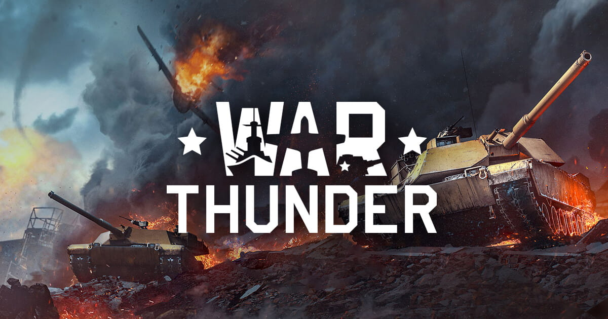

MyGameSphere
A história de muitos é marcada pelos jogos: risadas no meio da noite, conversas profundas e amigos que moram longe e se juntam apenas online. Momentos que serão lembrados para sempre e ficam marcados na alma.
A história de muitos é marcada pelos jogos: risadas no meio da noite, conversas profundas e amigos que moram longe e se juntam apenas online. Momentos que serão lembrados para sempre e ficam marcados na alma.

